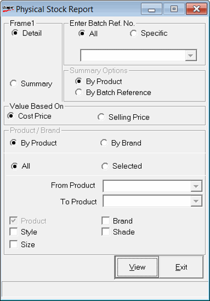

This option gives a batch wise report of the items for which physical stock is recorded during Physical stock taking.
How to reach: Stock > Stock Take > Physical Stock Report - Batch wise
Select the required options in the following window which comes up on invocation.

Enter Batch Ref. No.
All: Select to generate report for all the batches.
Specific: Select to generate report for specific batches from the drop down list.
Detail: Select to generate detailed report.
Summary: Select to generate summarised report.
Summary Options
By Product: Select to generate summarised report based on products.
By Batch Reference: Select to generate summarised report based on batch reference numbers.
Value Based On: Select Cost Price or Selling Price to display cost prices or selling prices in the report.
Note: The Cost Price can be hidden by the administrator based on user-wise restriction.
Product / Brand
By Product: Select to generate report based on product.
By Brand: Select to generate report based on brand.
All: Select to display all products or brands in the report.
Selected: Select to display selected products or brands in the report.
From Product: Specify product or brand from where the report has to begin.
To Product: Specify product or brand where the report has to end.
Note: Under Product/ Brand, if By Product is selected then From Product and To Product appear. Similarly, if By Brand is selected then From Brand and To Brand appear. From Product/ Brand and To Product/ Brand is activated only if Selected is checked.